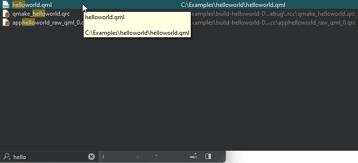
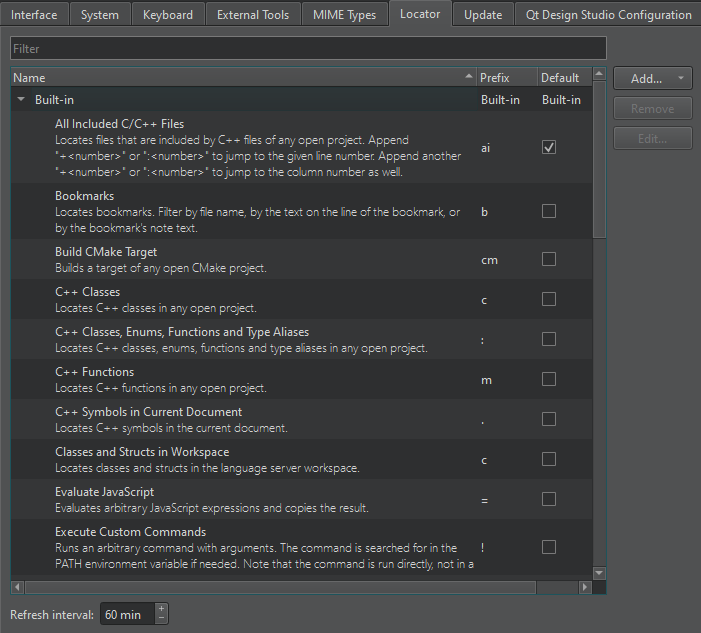

Locate files using the keyboard
Use the Locator to browse through projects, files, classes, functions, documentation, and file systems.

To quickly access files not directly mentioned in your project, you can create your own locator filters. That way you can locate files in a directory structure you have defined.
To create locator filters, select Preferences > Environment > Locator > Add.

See also Creating Locator Filters, How To: Edit Code, and Edit Mode.